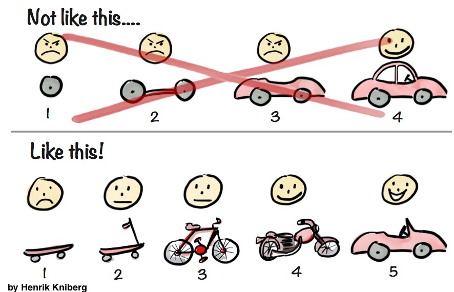

Creative Computing
Joel Gethin Lewis
Week 1: Lecture 1: Introduction to openFrameworks
What I'm going to talk about now:
- Introductions.
- Questions.
- My motivations and my aims for the next year.
- What are your aims for the next year?
- Doing this right thing/Ethics.
- Copying/Plagarism.
- Practice.
- How to criticise well.
- Homework assignment!
0. Introductions.
- What do you like to be called?
- How did you get to college today?
- How are you feeling today in one word?
1. Questions?
- What questions do you have?
- What are your concerns? What are you worried about? What do you want to ask but you are embarrassed?
- All questions allowed!
- 20 minutes alone on post it notes, then double group size every 10 minutes until it's the whole group.
- This idea came from Zach Lieberman. He does this exercise at the start of every session of School of Poetic Computation in New York.
2. My motivations and my aims for the next year. (continued).
- Brain exploding and some coding.
- I'm going to reference Wikipedia a lot in this course, because I think it's one of the best things that humanity has ever made, and I wish I'd had it when I was young. Also it's free - I hated it when teachers would reference books that I couldn't afford when I was at university.
2. My motivations and my aims for the next year (continued).
- I only ask that you pay attention and ask questions if you have them. I'd really encourage you to take the time to watch the films and read the references I put up. Think of them as cheat codes to get you to the next level quicker than I did.
- To introduce lots of interesting concepts from many areas so that you know the magic word to search for if you want to know more. Obfuscation is a BIG problem.
- To teach you how to code, to start you on that path and point you in the right direction.
- To teach the history of creative computing, and by extension, computing, creativity and everything (-;.
2. My motivations and my aims for the next year (continued).
- To teach you see problems at many levels (abstraction), break down problems (decomposition), find the order in them (pattern recognition), make solutions using a series of steps (algorithms) and realise that you might be able to use that solution in lots of areas (generalisation).
- Most of all, to teach you to be autodidacts, and, as previously mentioned, to blow your mind at least once per lecture.
- First task: what is an autodidact?
3. What are your aims for the next year? Some suggestions...
- Taking some inspiration from the Bauhaus, I think materiality is interesting. What does materiality mean? I hear it all the time at universities.
- The Bauhaus also had the best parties, do we want to do that too?
- This year is not a break, it's about practice. We are going to do projects all the time. What do you want to make? What are the issues that matter to you? Why do they matter to you?
- What kind of utopia do you want? I think I want university everywhere, forever, for everyone. Sometimes teaching, sometimes learning.
3. What are your aims for the next year? Some suggestions... (continued)
- Caitlin Morris has some advice for you all:
"Remind students that technical exercises can be the root of a bigger idea. I’ve had students submit small sketches along with their introductory exercises under the prompt of “if I worked on this for another month/year, what could it become?”. Some really beautiful ideas emerge and I’ve found that it makes students more concept-attentive in their weekly projects, as well as providing some groundwork for larger final projects."
3. What are your aims for the next year? Some suggestions... (continued)
- I think this is great advice for how to make progress to bigger goals:
3. What are your aims for the next year? Some suggestions... (continued)
- You are going to go further faster than anyone else here.
- Faster than the BSc, the MSc, the PhD's or the staff.
- The reason is that you already have a practice.
- Creative computing knowledge can be applied to ANY practice. See the MIT Computational Thinking book to see how researchers in many fields are learning computational knowledge that even computer scientists don't use, as they don't have the orginal subject knowledge.
- Do we have any textiles people here? Textiles is the beginning of computing! The Jacquard Loom was the first programmable object. Also, Anni Albers is one of my favourite artists. How could we be inspired by her practice?
3. What are your aims for the next year? Some suggestions... (continued)
- Again, that MIT Computational Thinking book has a large section about the importance of computing to every area of science. I want to prove that for craft and design and art.
- Do you want to do the same? This is what we are all here to do.
- We are now a community.
3. What are your aims for the next year? Some suggestions... (continued)
- Introduction exercise: "Name Circle".
- Energy exercise: "Clap Circle".
- Do you know any more of these? Send me them if you do.
3. What are your aims for the next year? Some suggestions... (continued)
- Circle is always the way I want to do things when we discuss, but I’m going to bend it into a half circle when I do presentations, but I’m going to sit in the middle.
- Sit where you like on chairs or on the floor or whatever. If you need to go to the bathroom or take a moment it’s fine, you don’t have to ask.
- Please silence your devices so everyone else finds it easier to pay attention. Saying that, I actively encourage you to use devices when you are in this community whenever you want to.
- Part of what you are going to do together is to write notes on what is going on so you can share them.
- It’s up to you to organise things.
3. What are your aims for the next year? Some suggestions... (continued)
- I’m going to record my screen and camera as a backup, which you can use if you want. Come to me if you want video files on the Slack.
- I will also post my lecture slides, they will always be online on the Github. That’s how I’m delivering them now.
- The complete slides for the course aren’t available yet as they don’t exist. I’m going to write as we go because this is the first time that this is happening.
- I need you to help future DIPLOMATS!
- What do we call ourselves? What is our motto? Secret handshake?
- It’s up to us in this community to make it kind. I need your help to do that.
3. What are your aims for the next year? Some suggestions... (continued)
- YOU ALL are going to produce the wiki for the course!
- They are going to make notes and share them together, I will also add content to the wiki.
- There will be prizes for best writer, editor, illustrator, photographer, videographer, musician and influencer/hype person at the end of the year.
- Demo the course wiki, make a new page for companies to visit.
- Who has a GitHub ID already?
3. What are your aims for the next year? Some suggestions... (continued)
- I want someone who doesn't have a GitHub ID to pair up with someone who has and the person who has show the person who hasn't how to sign up. Everyone do that. Give me your usernames on the Slack when you have done it and I'll add you to the GitHub project for the whole term.
- Which companies do you want to visit? You must perfect moving as a silent unit! You could make a patch to thank people you visit? See Trevor Paglen's Symbology work for some inspiration.
- Which galleries do you want to visit? Make a page for that.
3. What are your aims for the next year? Some suggestions... (continued)
- Do we want to do social media?
- What is our course Code of Conduct (CoC)? From p5js? Let's discuss.
- Do we want to make a Wikipedia page for the course? For each other? How do we get the Diplomats nickname in there? Do we have to publish an article somewhere? On Twitter? Is this even allowed?
3. What are your aims for the next year? Some suggestions... (continued)
- I'd like to set up an audio reactive visual posse/crew/gang that start doing visuals for club nights and the like, lets start running our own!
- Or a TV station?
- Nintendo Labo club?
- Thoughts?
3. What are your aims for the next year? Some suggestions... (continued)
- What about a trip?
- What about a retreat?
- What about here?
4. Doing this right thing/Ethics.

- This was from a tweet by Cassie Robinson, she's ace.
5. Copying/Plagarism.

- This is the official UAL page on referencing and academic misconduct.
5. Copying/Plagarism (continued).
- The main thing I take from it is this section:
"Throughout your studies, you will be encouraged to reference the work of other artists, writers, designers or performers in your work. Tutors will expect to find reference to the sources of your ideas in supporting documentation such as sketchbooks or initial drafts. This is an essential and valuable part of your education. As long as the source of the ideas is acknowledged, this is not plagiarism."
13. Homework assignment!
Thanks!
- More about me: @joelgethinlewis
- Get in contact via the CCI Slack!
- Website:
https://jgl.github.io/CCIDiploma-SpringSummer2020/ - Today's slides:
https://jgl.github.io/CCIDiploma-SpringSummer2020/oF_lecture_01.html